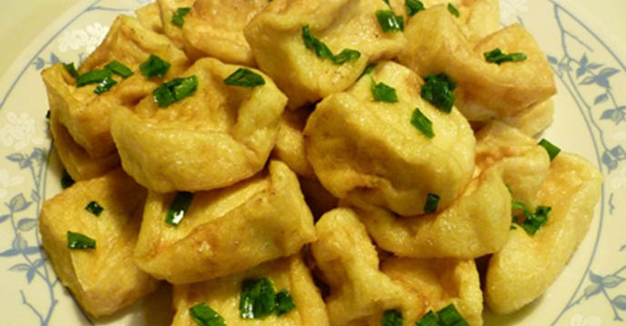
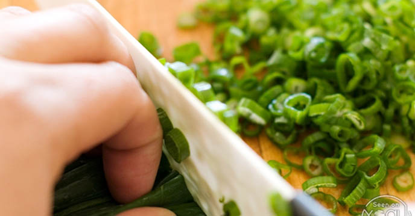
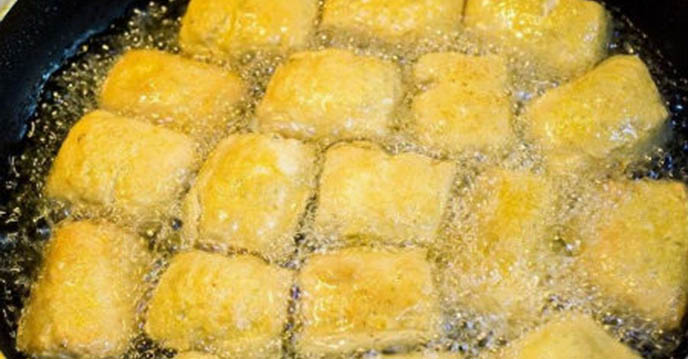
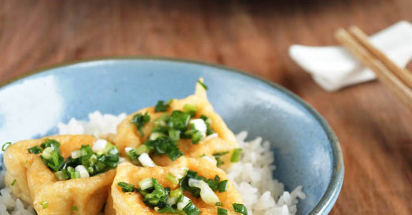

Cách làm đậu phụ rán tẩm hành đơn giản vô cùng mà lại quá ngon. Chỉ đổi cách thức chế biến một chút cho cách rán đậu thông thường là bạn đã có một món ngon mới lạ cho cả gia đình rồi. Hãy thử làm ngay cùng PasGo Team nhé!
Đậu tẩm hành là một món ăn dễ làm từ khâu mua nguyên liệu đến cách chế biến. Tổng thời gian thực hiện chỉ khoảng 15-20 phút
- Nguyên liệu:
- Đậu phụ khoảng 3 bìa lớn
- Hành lá 4-5 nhánh
- Dầu ăn
- Nước mắm ngon
- Đường
Cách làm đậu phụ rán tẩm hành:

Bước 1: Đậu phụ rửa qua nước cho sạch bụi, sau đó cắt miếng vừa ăn, đặt lên khăn thấm nước để khi rán đậu không bị bắn dầu.
Bước 2: Hành lá nhặt và rửa sạch, để ráo nước rồi cắt bỏ phần đầu trắng, thái nhỏ.
Bước 3: Cho nước mắm ra bát và cho hành lá thái nhỏ vào, khuấy đều.
Nếu không thích ăn mặn quá, có thể pha nước mắm và nước lọc theo tỷ lệ 1:2. Ngoài ra cũng có thể pha nước mắm, đường, nước lọc theo tỷ lệ 1:1:2. Tùy khẩu vị gia đình để điều chỉnh cho phù hợp.
Bước 4: Trình bày và thưởng thức
Món đậu phụ rán tẩm hành ăn ngay khi nóng sẽ rất ngon, miếng đậu vàng thơm, nóng hổi mà vẫn giữ được lớp vỏ giòn giòn khi vừa rán xong, lại thơm mùi hành, đậm đà mùi mắm nên rất đưa cơm.
Chúc các bạn thành công với cách làm đậu phụ rán tẩm hành đơn giản này nhé! Đừng quên PasGo là giải pháp đặt bàn Nhà hàng kèm ưu đãi trực tuyến, với cộng đồng hơn 2000 Nhà hàng thương hiệu lớn nhỏ khắp Hà Nội, Sài Gòn, Nha Trang, Đà Nẵng,... nha!
Mời các bạn tham khảo một số Quán ăn gia đình rất được ưa chuộng trên PasGo dưới đây (click vào link tên Nhà hàng để xem chi tiết ưu đãi mới nhất)